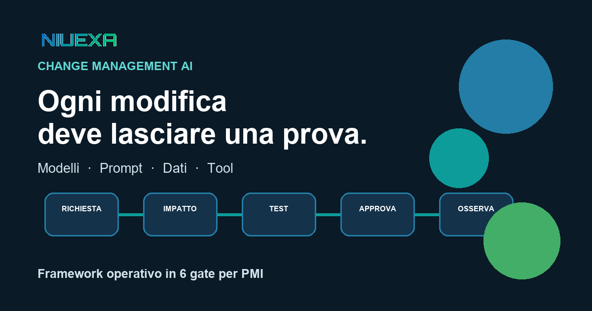
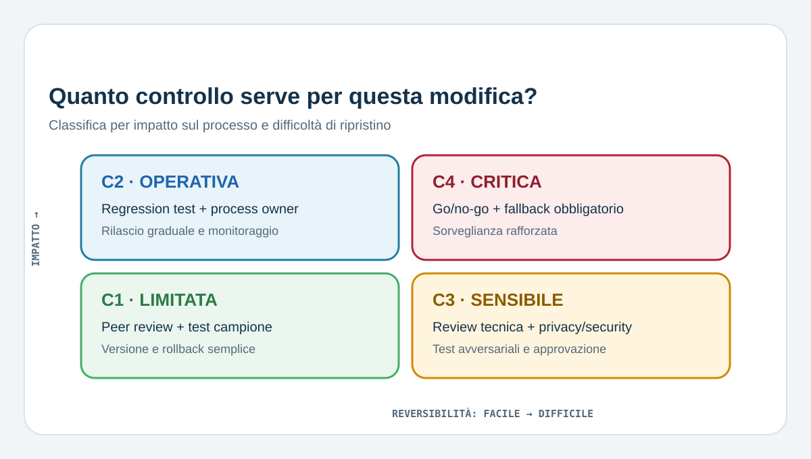
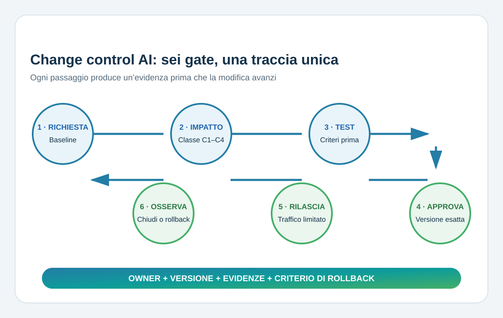

Risposta rapida: che cos’è il change management AI?
Il change management AI è il processo con cui un’azienda registra, valuta, testa, approva, distribuisce e monitora ogni modifica capace di cambiare il comportamento di un sistema AI. Non riguarda solo il codice: include modello, prompt, knowledge base, dati, soglie, tool, permessi, routing e istruzioni operative. L’obiettivo non è rallentare il team, ma sapere che cosa è cambiato, perché, con quali prove, chi ha approvato e come tornare indietro.
Perché una piccola modifica può avere un grande impatto
Nel software tradizionale una modifica è spesso legata a una funzione precisa. In un workflow AI, invece, gli effetti emergono dall’interazione tra componenti. Un prompt più breve può cambiare il formato dell’output; una nuova fonte può introdurre informazioni obsolete; un aggiornamento del modello può modificare tono, accuratezza, latenza o costo; un nuovo tool può trasformare una risposta in un’azione reale.
Per questo “abbiamo cambiato solo il modello” non è una prova di basso rischio. La domanda corretta è: quale decisione o azione aziendale può cambiare? Il NIST AI Risk Management Framework propone una gestione continua del rischio lungo il ciclo di vita. Il profilo NIST per l’AI generativa richiama inoltre policy d’uso, inventari, monitoraggio e configurazioni human-AI. Il principio operativo per una PMI è applicare controlli proporzionati, non costruire burocrazia uguale per tutto.
Che cosa deve entrare nel registro delle modifiche
Una modifica è rilevante quando può influire su output, utenti, dati, azioni, costi o capacità di ricostruzione. Il registro dovrebbe coprire almeno:
- modello e provider: versione, parametri, endpoint o politica di data retention;
- prompt e istruzioni: prompt di sistema, esempi, vincoli, formato e criteri di rifiuto;
- dati e conoscenza: fonti RAG, filtri, chunking, embedding, metadati e scadenze;
- tool e permessi: API, credenziali, azioni consentite, limiti e approvazioni umane;
- logica del workflow: routing, soglie, fallback, escalation e controlli deterministici;
- esperienza utente: disclosure, istruzioni, campi di input e modalità di revisione.
Ogni record minimo contiene owner, motivo, componenti coinvolti, rischio previsto, evidenze di test, approvatore, finestra di rilascio, versione precedente e criterio di rollback.
Classificare il rischio della modifica

| Classe | Esempio | Controllo minimo |
|---|---|---|
| C1 — Limitata | Testo guida interno, senza dati o azioni esterne. | Peer review, test campione, versione e rollback semplice. |
| C2 — Operativa | Prompt che classifica ticket o prepara comunicazioni. | Regression test, process owner, rilascio graduale e monitoraggio. |
| C3 — Sensibile | Nuova fonte con dati personali o tool che aggiorna il CRM. | Review tecnica e privacy/security, test avversariali, approvazione nominativa. |
| C4 — Critica | Modifica a decisioni o azioni difficili da invertire. | Go/no-go esecutivo, ambiente controllato, fallback obbligatorio e sorveglianza rafforzata. |
Questa è una tassonomia operativa Niuexa, non una classificazione legale. Per sistemi o usi regolati, la valutazione va collegata agli obblighi applicabili e ai ruoli competenti.
Il processo in sei gate

1. Richiesta e baseline
Descrivi il problema, non solo la soluzione proposta. Salva la versione corrente e una baseline di qualità, errori, costo, latenza e interventi umani. Senza baseline non puoi dimostrare se il cambiamento ha migliorato il processo.
2. Analisi d’impatto
Mappa utenti, dati, decisioni, azioni, integrazioni e obblighi coinvolti. Verifica se cambiano lo scopo d’uso, l’autonomia, il fornitore o il perimetro dei dati. Assegna la classe C1–C4 e l’elenco degli approvatori.
3. Piano e prove di test
Prepara casi normali, edge case, input vietati e regressioni storiche. Per un agente verifica anche tool selection, autorizzazioni, idempotenza, timeout e fallback. I criteri di accettazione vanno scritti prima del test: per esempio accuratezza minima, zero azioni non autorizzate e costo entro soglia.
4. Approvazione proporzionata
Il responsabile tecnico conferma la qualità dell’implementazione; il process owner accetta l’impatto operativo. Privacy, security o legale entrano quando dati, persone o requisiti lo richiedono. L’approvazione deve riferirsi alla versione esatta testata.
5. Rilascio controllato
Distribuisci prima su un gruppo limitato, in modalità shadow o con approvazione umana rafforzata. Mantieni disponibile la versione precedente. Registra orario, owner, configurazione e percentuale di traffico: “rilasciato in produzione” non è un piano di deployment.
6. Osservazione e chiusura
Confronta i risultati con baseline e criteri di accettazione per una finestra definita. Se la modifica supera le soglie, chiudila con evidenze; se degrada il processo, esegui rollback; se l’esito è ambiguo, non estendere il traffico. Le lezioni aggiornano test e policy successive.
Checklist prima del go-live
- La richiesta, l’owner e il motivo della modifica sono registrati.
- La versione attuale è salvata e ripristinabile.
- Impatto, dati, utenti, tool e dipendenze sono mappati.
- I criteri di accettazione sono misurabili e definiti prima del test.
- Il test copre casi normali, errori, regressioni e usi non previsti plausibili.
- L’approvazione è legata all’artefatto esatto che verrà rilasciato.
- Il rollout è limitabile e il fallback è operativo.
- Metriche, alert, finestra di osservazione e soglie di rollback sono attivi.
KPI utili: misurare il processo, non il numero di ticket
- Change failure rate: quota di modifiche che richiede rollback o correzione urgente.
- Tempo decisionale: dalla richiesta all’approvazione, separando attese e lavoro effettivo.
- Copertura delle regressioni: casi critici verificati prima del rilascio.
- Tempo di rollback: minuti necessari a ripristinare una versione sicura.
- Delta operativo: variazione di qualità, costo, latenza, errori e interventi umani rispetto alla baseline.
- Modifiche non registrate: cambi rilevati in produzione senza ticket e approvazione.
Più ticket non significa necessariamente più rischio: può indicare che il team ha finalmente reso visibile il cambiamento. Il segnale negativo è una modifica rilevante senza owner, test o versione ripristinabile.
Fonti e perimetro
Il framework in sei gate e la matrice C1–C4 sono una guida operativa Niuexa. Sono informati da:
- NIST AI Risk Management Framework, per la gestione continua e contestuale del rischio AI.
- NIST AI 600-1, Generative AI Profile, per policy d’uso, inventario, monitoraggio e configurazioni human-AI.
- Commissione europea, quadro dell’AI Act, che descrive un approccio basato sul rischio e, per i sistemi ad alto rischio, requisiti su logging, documentazione, controllo umano, robustezza e monitoraggio.
- ICO, domande pratiche su AI e dati personali, per ruoli, trasparenza, basi giuridiche e condivisione dei dati con fornitori.
Il contenuto è informativo e non sostituisce una valutazione legale, privacy, cybersecurity o regolamentare sul caso specifico.
FAQ sul change management AI
Che cos’è il change management AI?
È il controllo documentato delle modifiche che possono cambiare comportamento, rischio o prestazioni di un sistema AI.
Quali modifiche devo registrare?
Modello, prompt, dati, fonti, tool, permessi, soglie, routing, interfacce e istruzioni operative quando possono influire sul processo.
Ogni modifica richiede un comitato?
No. Una modifica C1 può bastare con peer review; una C3 o C4 richiede approvazioni e prove più profonde.
Come testo una modifica al prompt?
Con casi versionati normali, limite, vietati e regressioni, confrontando risultato, errori, costo, latenza e azioni dei tool.
Quando devo fare rollback?
Quando i criteri non sono rispettati, emergono effetti inattesi o il rischio residuo non è dimostrabilmente accettabile.